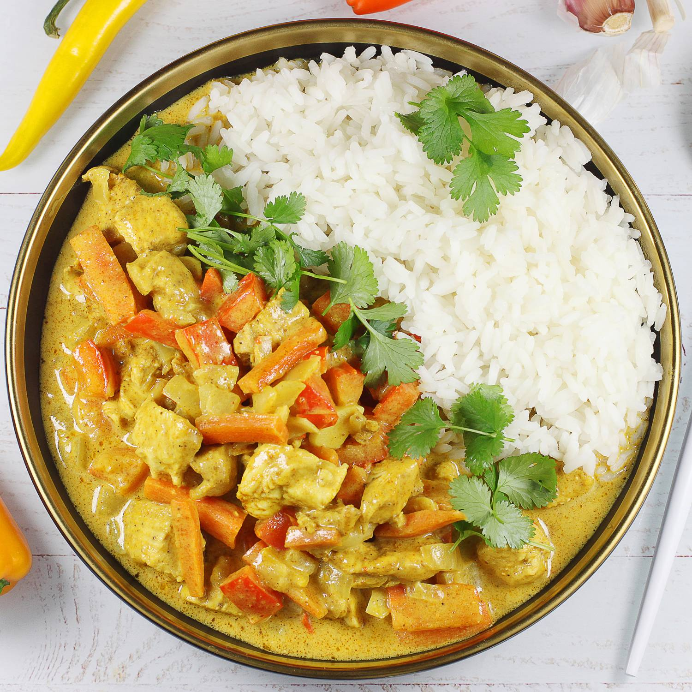

Back
Curry
This Indian-inspired creamy chicken curry recipe is similar to a curry I had in India. The aromatic spices and flavors are a delight to the senses! Delicious with fresh naan and basmati rice.

How to make Curry
You'll find the full, step-by-step recipe below — but here's a brief overview of what you can expect when you make this top-rated Indian chicken curry recipe:
Saute a diced onion in olive oil until lightly browned. Stir in the seasonings (garlic, curry powder, cinnamon, paprika, bay leaf, ginger, sugar and salt). Add the chicken pieces, tomato paste, yogurt, and coconut milk. Bring to a boil, reduce the heat, and simmer for 20 to 25 minutes. Remove the bay leaf and stir in the lemon juice and cayenne pepper. Continue simmering for about 5 more minutes.
Curry ingredients
- Meat:This super meaty lasagna has sweet Italian sausage and lean ground beef.
- Onion and garlic:An onion and two cloves of garlic are cooked with the meat to add tons of flavor.
- Tomato products:You'll need a can of crushed tomatoes, two cans of tomato sauce, and two cans of tomato paste.
- Sugar:Two tablespoons of white sugar add subtle sweetness and enhance the flavor of the sauce.
- Spices and seasonings:This lasagna recipe is flavored with fresh parsley, dried basil leaves, salt, Italian seasoning, fennel seeds, and black pepper.
- Lasagna noodles:Use store-bought or homemade lasagna noodles.
- Cheeses:Parmesan, mozzarella, and ricotta cheese make this lasagna extra decadent.
- Egg:An egg helps bind the ricotta so it doesn't ooze out of the lasagna when you cut into it.
How to make Curry Step-By-Step
- Make the meat sauce.
- Cook the noodles.
- Make the ricotta mixture.
- Layer the lasagna according to the recipe instructions.
- Cover with foil and bake.
- Let the lasagna rest before serving.